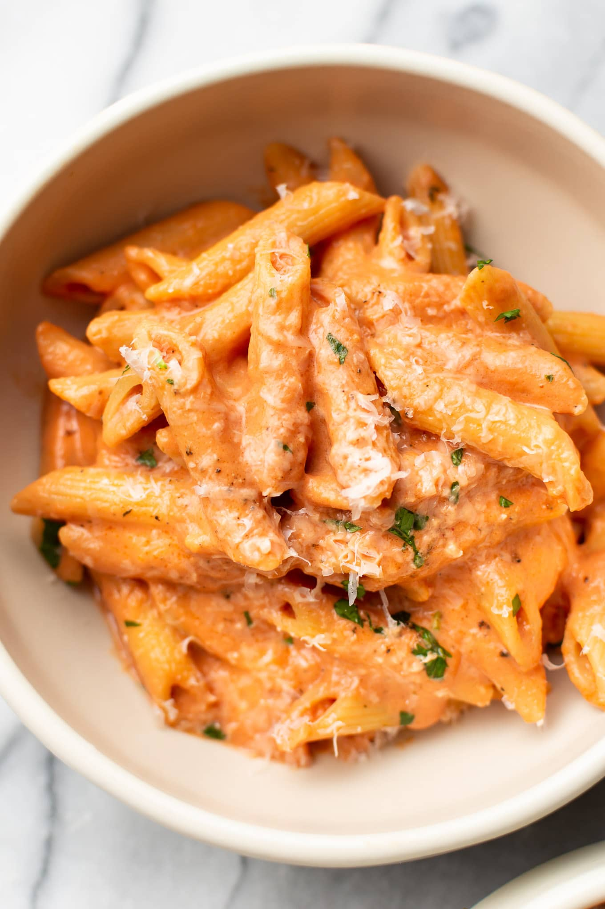

Cheesy Tomato Pasta

About The Dish
A warm, comforting bowl of cheese and tomato pasta—simple, creamy, and packed with rich flavour. This recipe uses basic ingredients but delivers a satisfying, restaurant-style taste. The creamy melted cheese blends with the tangy tomato sauce to create the perfect weeknight meal. It is quick, budget-friendly, and perfect for lunch or dinner.
Whether you are craving something cheesy, something saucy, or something cozy, this pasta has it all. You can customize it easily with herbs, extra veggies, or even protein, but it tastes amazing just as it is.
Ingredients
- 200g pasta (penne, fusilli, or spaghetti)
- 1 tbsp olive oil
- 1 small onion, finely chopped
- 2 to 3 garlic cloves, minced
- 1 cup tomato puree (or canned crushed tomatoes)
- 1 tsp red chili flakes (optional)
- ½ tsp black pepper
- ½ tsp oregano
- ½ tsp salt (adjust to taste)
- ½ cup mozzarella cheese (shredded)
- ¼ cup cheddar cheese (shredded)
- Fresh basil or parsley (optional, for garnish)
Steps
- Boil The Pasta
- Bring a pot of salted water to a boil.
- Add pasta and cook until al dente.
- Reserve ¼ cup pasta water and drain the rest.
- Prepare the Sauce
- Heat olive oil in a pan over medium heat.
- Add chopped onion and sauté until soft and golden.
- Add garlic and cook for 30 seconds until fragrant.
- Pour in the tomato puree. Mix well.
- Season the Sauce
- Add salt, black pepper, oregano, and chili flakes.
- Let the sauce simmer for 5 to 7 minutes until slightly thickened.
- Add Cheese
- Reduce heat to low.
- Add mozzarella and cheddar. Stir until melted into a creamy sauce.
- Add 2 to 3 tbsp pasta water if it becomes too thick.
- Combine Pasta & Sauce
- Add cooked pasta to the sauce. Toss well so every piece is coated.
- Cook for 1 to 2 more minutes.
Plate and Enjoy!
HOME